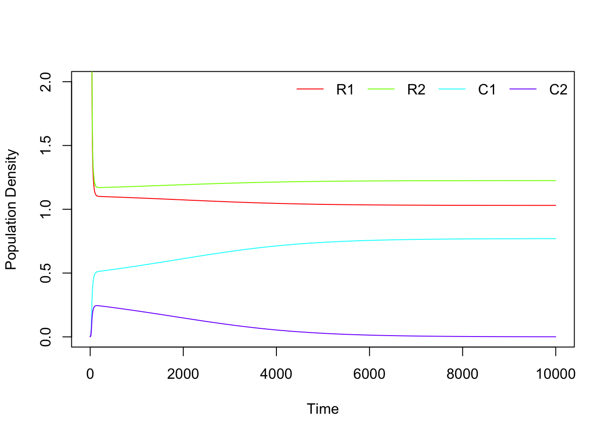

This website let’s you explore the Tilman resource competition model. The question is: can two consumer species coexist or will one drive the other to extinction?
library(deSolve)Let us define the system of four differential equations.
Tilman <- function(t, y, params) {
R1 <- y[1]
R2 <- y[2]
C1 <- y[3]
C2 <- y[4]
with(as.list(params), {
dR1.dt <- i1 - m1 * R1 - a11 * R1 * C1 - a12 * R1 * C2
dR2.dt <- i2 - m2 * R2 - a21 * R2 * C1 - a22 * R2 * C2
dC1.dt <- e11 * a11 * R1 * C1 + e21 * a21 * R2 * C1 - d1 * C1
dC2.dt <- e12 * a12 * R1 * C2 + e22 * a22 * R2 * C2 - d2 * C2
list(c(dR1.dt, dR2.dt, dC1.dt, dC2.dt))
})
}# parameter values
i1 <- 0.5
i2 <- 0.5
m1 <- 0.1
m2 <- 0.1
a11 <- 0.5
a21 <- 0.4
a12 <- 0.4
a22 <- 0.5
e11 <- 0.04
e21 <- 0.06
e12 <- 0.06
e22 <- 0.04
d1 <- 0.05
d2 <- 0.05
# initial population densities
R10 <- i1/m1 # R1 at predator-free equilibrium
R20 <- i2/m2 # R2 at predator-free equilibrium
C10 <- 0.002
C20 <- 0.001
MaxTime <- 10000
Time <- seq(0, MaxTime, by = 0.1)
params <- c(i1, i2, m1, m2, a11, a12, a21, a22, e11, e12, a21, a22, d1, d2)
color <- rainbow(4) # colors for the plot
# the numerical analysis
data <- ode(c(R10, R20, C10, C20), Time, Tilman, params)Let us plot the four time series.
matplot(Time, (data[, 2:5]), type = "l", lty = 1, col=color, ylab = "Population Density", xlab="Time", ylim = c(0,2))
legend("topright", c(expression("R1"), expression("R2"), expression("C1"), expression("C2")), lty = 1, col = color, bty = "n", horiz = TRUE)
# options(scipen = 0) # default
options(scipen = 999) # suppresses scientific notation
data[length(Time), ]## time 1 2 3
## 10000.0000000000 1.0304753086 1.2246329107 0.7699150160
## 4
## 0.0006390506